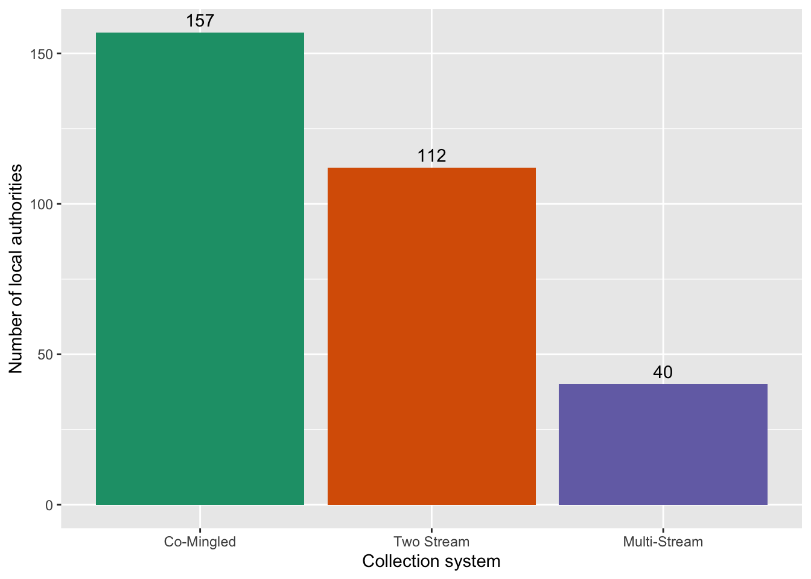
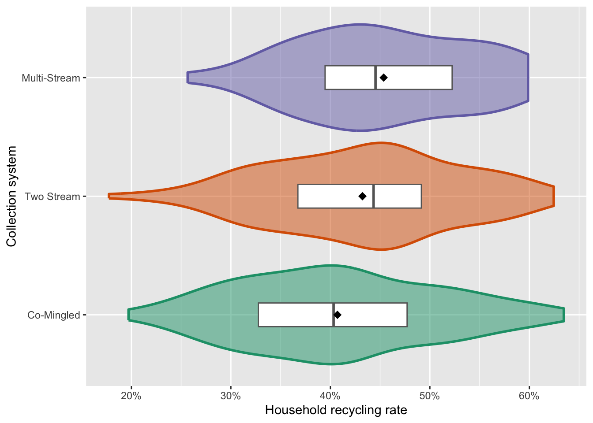
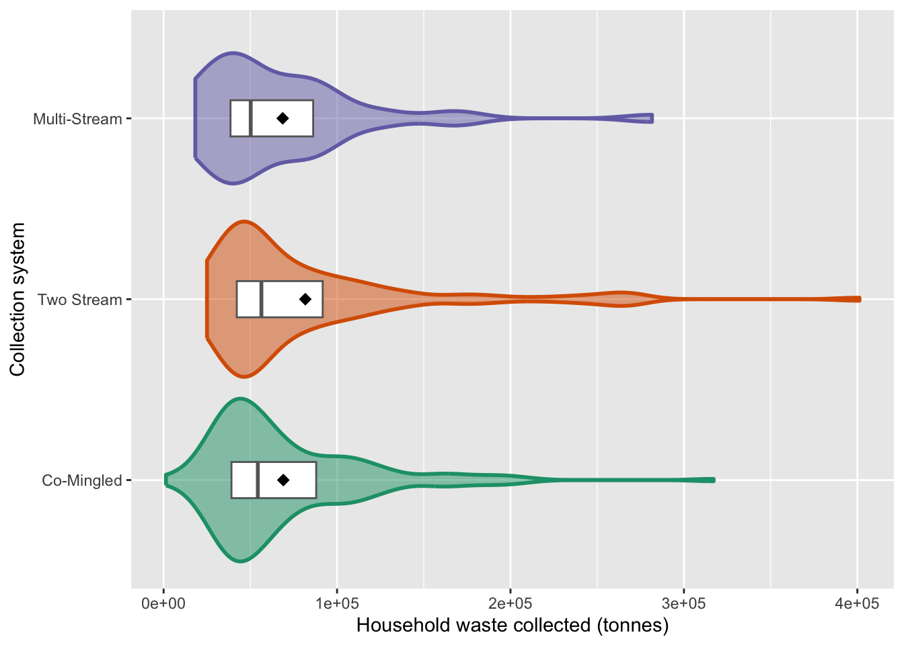
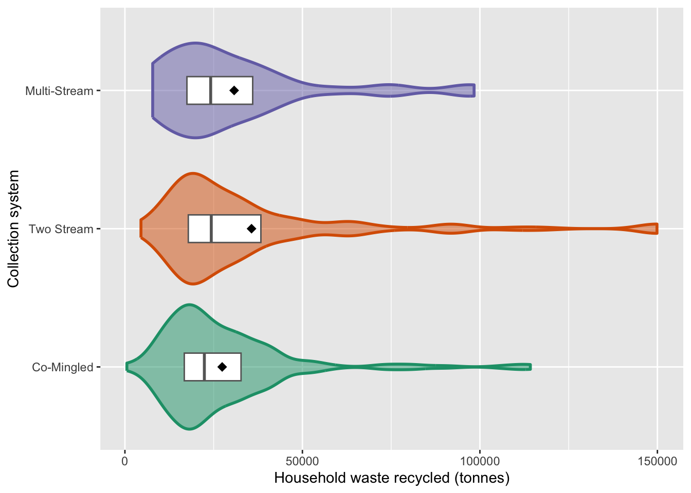

library(here)
library(tidyverse)
library(knitr)
library(moments)
library(rstatix)
library(broom)Comparison of Recycling Systems in England
Does the collection system have a meaningful impact on recycling rates?
Introduction
This paper sets out to answer the question: Does the collection system have a meaningful impact on recycling rates?
Local authorities in England can elect to use one of three collection systems for household recycling:
- Co-Mingled: all non-organic recyclable material is put into a single bin by the householder
- Two Stream: non-organic recyclable material must be sorted into two bins by the householder (e.g. one bin for glass and metal, and a second bin for paper, card and plastic)
- Multi-Stream: householders sort their non-organic recyclable material into separate bins for each type of material
Multi-Stream systems place a higher burden on the householder, so this paper asks whether that higher burden is associated with higher recycling rates, and whether any difference is large enough to matter in practice.
The word “meaningful” in the research question is important. A difference in recycling rates can be statistically detectable without being practically meaningful, particularly with a sample of 309 authorities. This analysis therefore reports not only whether the systems differ, but by how much, and with how much confidence.
A note on causation: local authorities choose their own collection systems. Therefore, this is observational data and not a randomised experiment. Throughout this paper the language is deliberately one of association rather than cause.
In this analysis, we set the threshold for statistical significance at p < 0.05.
Setup
Load required packages
Import the recycling data
recycling <-
read_csv(here("data/cln/data_recycling_system.csv")) |>
# reorder factor levels to assist with plotting
mutate(
collection_type = fct_reorder(collection_type, household_recycle_rate)
)
glimpse(recycling)Rows: 309
Columns: 7
$ lad21cd <chr> "E06000001", "E06000002", "E06000003", "E060000…
$ local_authority <chr> "Hartlepool", "Middlesbrough", "Redcar and Clev…
$ population <dbl> 92571, 143734, 136616, 197030, 108222, 128577, …
$ collection_type <fct> Co-Mingled, Co-Mingled, Two Stream, Multi-Strea…
$ household_collected <dbl> 39552, 64433, 57866, 88050, 46203, 59958, 94463…
$ household_recycled <dbl> 12893, 19169, 22077, 22592, 14968, 22137, 39753…
$ household_recycle_rate <dbl> 0.3259759, 0.2975028, 0.3815194, 0.2565815, 0.3…The dataset includes information about household recycling for 309 local authorities in England in 2021. It contains the unique code and name of each authority, the population of the authority in 2021, the type of collection system in place in 2021, the amount of household waste collected and recycled in 2021 (in tonnes) and the household recycling rate.
Helper code
The chunk below contains code to support consistent plotting.
# We'll be creating a number of similar plots, so we can wrap the code into a function
plot_distribution <- function(data, yvar, ylab, percent = FALSE) {
p <- ggplot(data, aes(x = collection_type, y = {{ yvar }})) +
geom_violin(aes(fill = collection_type, colour = collection_type),
linewidth = 1, alpha = 0.5) +
geom_boxplot(outlier.alpha = 0, coef = 0,
colour = "grey40", width = 0.2) +
stat_summary(fun = mean, geom = "point", shape = 18, size = 3) +
coord_flip() +
scale_colour_brewer(palette = "Dark2", guide = "none") +
scale_fill_brewer(palette = "Dark2", guide = "none") +
labs(
x = "Collection system",
y = ylab
)
if (percent) p <- p + scale_y_continuous(labels = scales::percent)
p
}
summarise_distribution <- function(data, yvar) {
data |>
group_by(collection_type) |>
summarise(
n = n(),
mean = mean({{ yvar }}, na.rm = TRUE),
median = median({{ yvar }}, na.rm = TRUE),
sd = sd({{ yvar }}, na.rm = TRUE),
skew = skewness({{ yvar }})
)
}The chunk below contains code to support reporting of results.
# Convert a proportion to percentage points
pp <- function(x, digits = 1) round(x * 100, digits)
# Count and share of LAs using a given collection system
n_sys <- function(x) sum(recycling$collection_type == x)
pct_sys <- function(x) round(mean(recycling$collection_type == x) * 100)
# Pull a single value out of a broom tidy tibble by term name
get_term <- function(tbl, term_name, col = "estimate") {
tbl[[col]][tbl$term == term_name]
}Visualise the distributions
Before we run a significance test, let’s view both the number of local authorities employing each type of collection system (see Figure 1), and the distributions of recycling rates by collection type (see Figure 2).
Breakdown of collection systems
fig_1 <-
ggplot(recycling, aes(collection_type, fill = collection_type)) +
geom_bar() +
geom_text(stat = "count", aes(label = after_stat(count)), vjust = -0.5) +
labs(
x = "Collection system",
y = "Number of local authorities"
) +
scale_fill_brewer(palette = "Dark2", guide = "none")
fig_1
The bar chart in Figure 1 shows that the group sizes are uneven. 157 (51%) authorities use a Co-Mingled system, 112 (36%) use a Two Stream system and 40 (13%) use a Multi-Stream system.
Distribution of recycling rates by system
fig_2 <-
plot_distribution(
recycling,
household_recycle_rate,
ylab = "Household recycling rate",
percent = TRUE
)
fig_2
summarise_distribution(recycling, household_recycle_rate) |> kable(digits = 3)| collection_type | n | mean | median | sd | skew |
|---|---|---|---|---|---|
| Co-Mingled | 157 | 0.407 | 0.403 | 0.099 | 0.215 |
| Two Stream | 112 | 0.432 | 0.443 | 0.095 | -0.129 |
| Multi-Stream | 40 | 0.454 | 0.445 | 0.086 | -0.038 |
As shown in Table 1, we can see that Multi-Stream collection systems achieved the highest mean and median recycling rate in 2021, and Co-Mingled systems achieved the lowest rates. The skew number tells us that the distributions are not normal. Co-Mingled systems show a positive skew, while Two Stream and Multi-Stream both show a negative skew.
Why we analyse rate rather than volume
The raw volumes of household waste recycled by local authority are heavily right-skewed, as shown in the plots below. They are dominated by local authority size, since a large council collects and recycles more of everything. This is why the analysis works on the rate of recycling, which normalises for size. It is also why we will use log(population) when we come to control for size in the regression.
fig_3 <-
plot_distribution(
recycling,
household_collected,
ylab = "Household waste collected (tonnes)"
)
fig_3
summarise_distribution(recycling, household_collected) |> kable(digits = 3)| collection_type | n | mean | median | sd | skew |
|---|---|---|---|---|---|
| Co-Mingled | 157 | 69016.55 | 54330 | 45496.03 | 1.962 |
| Two Stream | 112 | 81700.96 | 56376 | 64916.62 | 2.296 |
| Multi-Stream | 40 | 68661.48 | 50222 | 50777.70 | 2.203 |
fig_4 <-
plot_distribution(
recycling,
household_recycled,
ylab = "Household waste recycled (tonnes)"
)
fig_4
summarise_distribution(recycling, household_recycled) |> kable(digits = 3)| collection_type | n | mean | median | sd | skew |
|---|---|---|---|---|---|
| Co-Mingled | 157 | 27397.06 | 22379.0 | 18916.55 | 2.340 |
| Two Stream | 112 | 35662.92 | 24325.5 | 30791.84 | 2.300 |
| Multi-Stream | 40 | 30769.22 | 24156.0 | 22197.09 | 1.639 |
Test for significance
Kruskal-Wallis test
The default statistical test would be a one-way ANOVA, which compares group means. But ANOVA assumes each group is roughly normally distributed with similar variance, and our groups are uneven (157 / 112 / 40) and somewhat skewed, as shown above. Instead, we will use the Kruskal-Wallis test: the non-parametric equivalent. It works on the ranks of the values instead of the raw values, so it makes no assumption about the shape of the distribution, and it handles unequal group sizes comfortably. It tests whether at least one group tends to sit higher than the others.
# Run the KW test for recycling rate as explained by collection type
kw <- kruskal.test(household_recycle_rate ~ collection_type, data = recycling)
kw
Kruskal-Wallis rank sum test
data: household_recycle_rate by collection_type
Kruskal-Wallis chi-squared = 9.8269, df = 2, p-value = 0.007347The test returns H = 9.83 on 2 degrees of freedom, p = 0.007. At least one collection system therefore differs from the others to a statistically significant degree.
This tells us that a difference exists somewhere, but not where, and not how large. Both of those questions matter more than the first.
Effect size
However, a p-value only tells us whether there is an effect, not how big it is. With 309 authorities, even a trivial difference can come out significant. Our question asks about a meaningful impact, so we need an effect size, which measures how much of the variation in recycling rates is explained by collection system.
eff <- recycling |> kruskal_effsize(household_recycle_rate ~ collection_type)
eff |> kable(digits = 3)| .y. | n | effsize | method | magnitude |
|---|---|---|---|---|
| household_recycle_rate | 309 | 0.026 | eta2[H] | small |
Eta-squared is 0.026, meaning collection system accounts for under 2.6% of the variation in recycling rates between local authorities. By the conventional thresholds (0.01 small, 0.06 medium, 0.14 large) this is a small effect. This means that the collection system is not the biggest contributor to the recycling rate.
Dunn’s test
Finally, we can run Dunn’s test to test the collection systems in a pairwise manner, which allows us to see whether any one of them show a significant difference in recycling rate compared to the others.
medians <- recycling |>
group_by(collection_type) |>
summarise(median_rate = median(household_recycle_rate)) |>
mutate(collection_type = as.character(collection_type))
dunn <- recycling |>
dunn_test(household_recycle_rate ~ collection_type,
p.adjust.method = "holm") |>
left_join(medians, by = join_by(group1 == collection_type)) |>
rename(median1 = median_rate) |>
left_join(medians, by = join_by(group2 == collection_type)) |>
rename(median2 = median_rate) |>
mutate(median_gap_pp = pp(median2 - median1)) |>
select(-.y., -median1, -median2)
# Function to pull out data from Dunn test
dunn_gap <- function(g1, g2) dunn$median_gap_pp[dunn$group1 == g1 & dunn$group2 == g2]
dunn_padj <- function(g1, g2) dunn$p.adj[dunn$group1 == g1 & dunn$group2 == g2]
dunn |> kable(digits = 3)| group1 | group2 | n1 | n2 | statistic | p | p.adj | p.adj.signif | median_gap_pp |
|---|---|---|---|---|---|---|---|---|
| Co-Mingled | Two Stream | 157 | 112 | 2.233 | 0.026 | 0.051 | ns | 4.0 |
| Co-Mingled | Multi-Stream | 157 | 40 | 2.754 | 0.006 | 0.018 | * | 4.2 |
| Two Stream | Multi-Stream | 112 | 40 | 1.149 | 0.251 | 0.251 | ns | 0.2 |
The Kruskal-Wallis test is an omnibus test: it reports that some difference exists without identifying which systems differ. Dunn’s test makes the three pairwise comparisons, using the same pooled ranks. Because running three tests inflates the chance of a false positive, the p-values are adjusted using the Holm correction, and it is the adjusted values (p.adj in the table above) that should be interpreted.
Only one pair differs significantly after correction. Co-Mingled authorities are associated with lower recycling rates than Multi-Stream authorities (p.adj = 0.018), a median gap of 4.2pp.
The other two comparisons are more nuanced. The Co-Mingled versus Two Stream comparison narrowly misses our stated threshold for significance (p.adj = 0.051), and yet the median gap is 4pp, which is comparable in size to the significant result above. The evidence here is suggestive but not conclusive.
The Two Stream versus Multi-Stream comparison is different. It is not significant (p.adj = 0.251) and the median gap is a negligible 0.2pp. Here both the test and the estimate point the same way, towards there being little or no real difference between the two.
Taken together, the pattern is consistent with the burden of separation mattering mainly at the first step, going from mixing everything into one bin to separation into two bins, with little further gain from separating into more streams. The data support this interpretation but do not establish it. With only 40 Multi-Stream authorities, this analysis has limited power to detect modest differences.
Conclusion
Does the collection system have a meaningful impact on recycling rates?
The answer has three parts, and they pull in different directions.
Yes, there is a real difference, and it is not trivial in size. Authorities that require householders to separate their recycling are associated with higher recycling rates than those that collect everything co-mingled. Adjusting for authority size, the gap is 2.7pp for Two Stream and 4.5pp for Multi-Stream, relative to Co-Mingled. A 4pp shift in the national recycling rate would be a substantial policy outcome, so this is not a difference that can be dismissed as academic.
But the effect appears to be a step, not a ladder. The evidence does not support the intuition that asking householders to sort into ever more streams yields ever higher rates. Two Stream and Multi-Stream authorities are statistically indistinguishable from one another, with a median gap of 0.2pp. What appears to matter is whether households separate their recycling at all, not how finely they separate it. If this interpretation is correct, it has a clear practical implication: the additional burden that Multi-Stream places on householders, relative to Two Stream, gives no detectable improvement. This is the most interesting finding in the analysis, and it is also the one held most tentatively, resting as it does on only 40 Multi-Stream authorities.
And most of what drives recycling rates lies elsewhere. Collection system explains under 2.6% of the variation between authorities. Controlling for population raises the figure only to 5%. The other 95% belongs to factors this analysis cannot see. A local authority hoping to transform its recycling performance by changing its bin system alone would, on this evidence, be disappointed. The system is one lever among many, and not the largest.
There are also sound reasons why an authority might choose a system irrespective of its effect on rates. Without access to a Materials Recovery Facility, where co-mingled waste can be mechanically sorted, a council may have little practical alternative to kerbside sorting. The choice of system is constrained by infrastructure, cost and geography, not made freely on the basis of expected recycling rate.
Data sources and limitations
Observational, not experimental. Local authorities chose their own collection systems. Any of the associations reported here could reflect the kind of authority that adopts a given system rather than the system itself. Nothing in this analysis establishes cause.
Residual confounding is likely. The only control available in this dataset is population. The factors that the recycling literature would flag most strongly are absent: deprivation, rural versus urban character, and housing stock. Housing type in particular is a known driver, since flats recycle markedly less well than houses whatever bins are provided, and it is plausibly correlated with the choice of system. The regression should therefore be read as adjusting for authority size only.
A single year. All figures relate to 2021. Rates fluctuate, and 2021 was likely affected by altered patterns of household waste generation during the pandemic. A multi-year panel would be more robust and would allow authorities that changed system to be observed before and after, which is a considerably stronger design.
Unequal and small groups. Only 40 of the 309 authorities operate Multi-Stream systems. Comparisons involving this group have limited statistical power, and the finding that Two Stream and Multi-Stream cannot be distinguished may reflect that limitation rather than a true absence of difference.
System classification. Collection system data was obtained by Freedom of Information request and reflects the system in place at the time of response. Authorities operating hybrid or transitional arrangements are assigned to a single category, which introduces some measurement error.
Further work
- Test Two Stream against Multi-Stream directly by releveling the factor, rather than inferring it from two comparisons against a shared reference.
- Join contextual variables (deprivation, rural or urban classification, housing type) and re-fit the model. If the system effect survives these controls, the finding is considerably stronger.
- Use those contextual variables to construct peer groups of comparable authorities through cluster analysis, deliberately excluding both the recycling rate and the collection system, and then compare systems within peer groups. This controls for confounding by stratification.
- Extend to multiple years to exploit authorities that changed system.